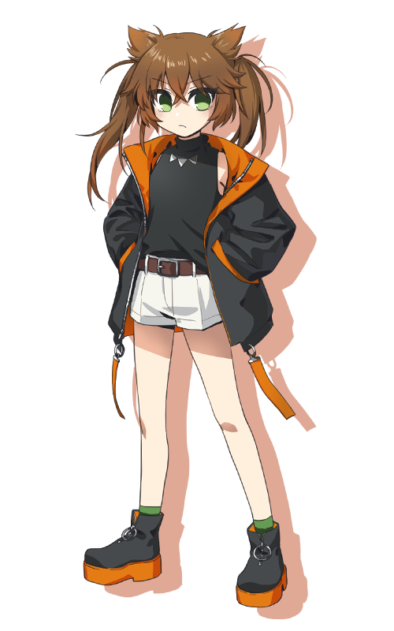

『青い窓を見上げて』
「勇気と希望のユキよ！」
「ばーかばーか、ラタスのば～か！」
種別：救世主 脅威度：2 能力値：猟奇3・愛1
性別：女 年齢：14 身長：140cm 誕生日：初夏
現代日本の生まれ。
子供っぽく、自分の気持ちを素直に表現するのが苦手。
正義感が強く、小学生まではガキ大将のように振る舞っていた。
しかし中学生に上がる頃から周囲に力負けするようになり、
ある日、報復を恐れてイジメを見て見ぬフリしてしまった。
堕落の国で、今度こそ強くて正しい自分を貫きたいと思っている。
武器は巨大なハサミ。
見過ごしてしまったイジメでハサミが使われていたため、
ユキにとってそれが暴力の象徴になっている。
好き：こよみ、リリオ、……一応ラタスも
苦手：白黒つかないこと
back